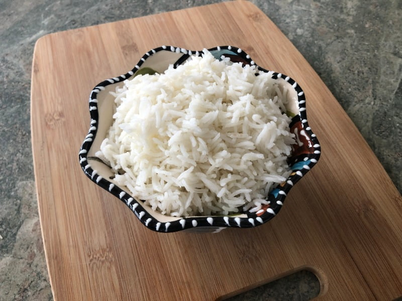

Rice
Ingredients:
- 1 cup of rice
- 2 cups of water
- 1 tablespoon of butter or oil
- 1 teaspoon of salt
Instructions:
- Rinse the rice under cold water until the water runs clear.
- In a medium saucepan, melt the butter over medium heat.
- Add the rice and stir for a few minutes until the rice is lightly toasted.
- Add water and salt, and bring to a boil.
- Once boiling, reduce the heat to low, cover, and let it simmer for about 15-18 minutes until the water is absorbed.
- Remove from heat and let the rice sit, covered, for an additional 5 minutes.
- Fluff the rice with a fork before serving.
Photos of Ingredients:
Final Photo:
